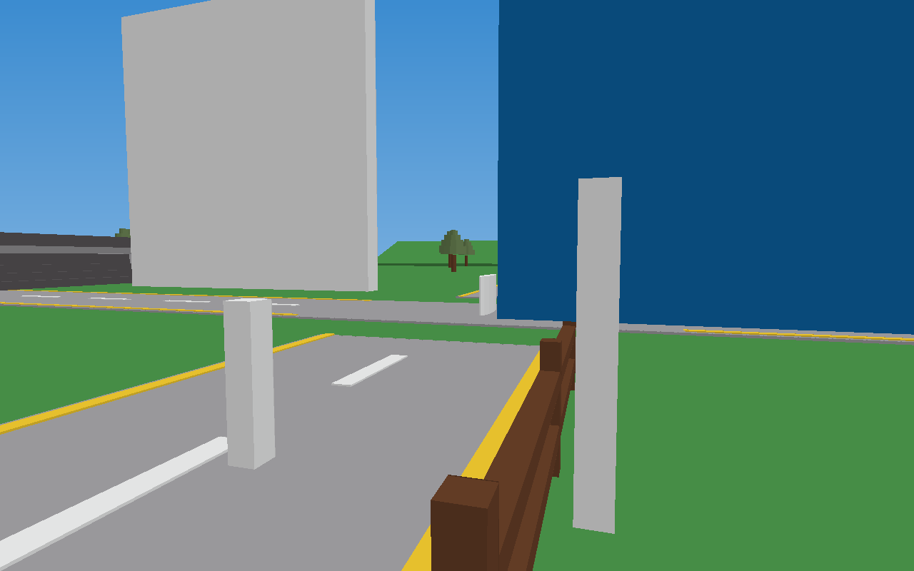
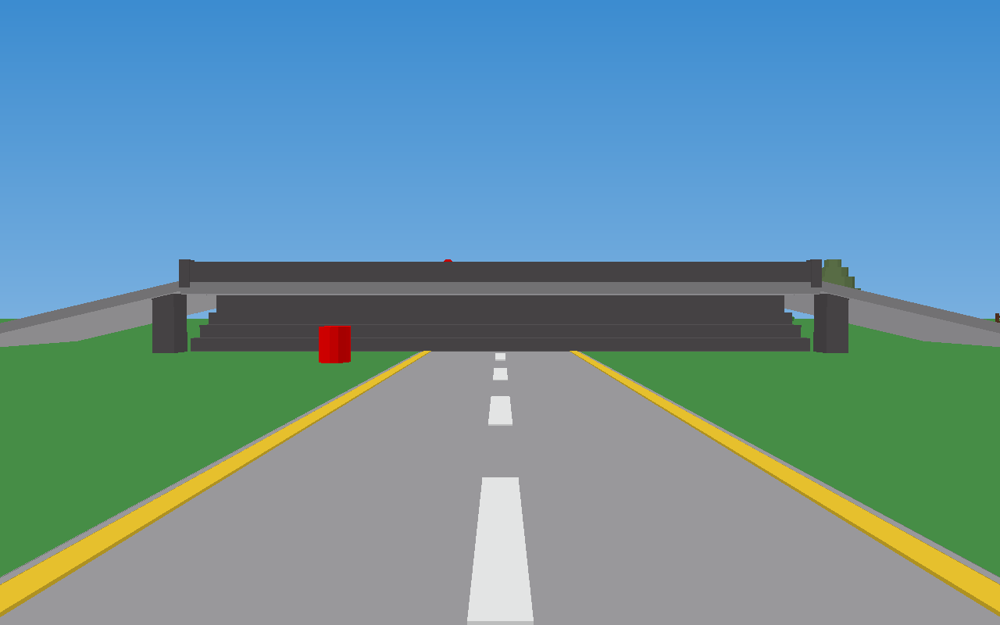
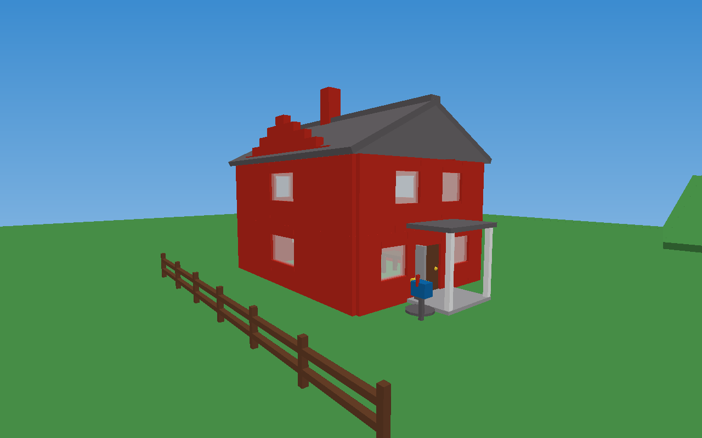
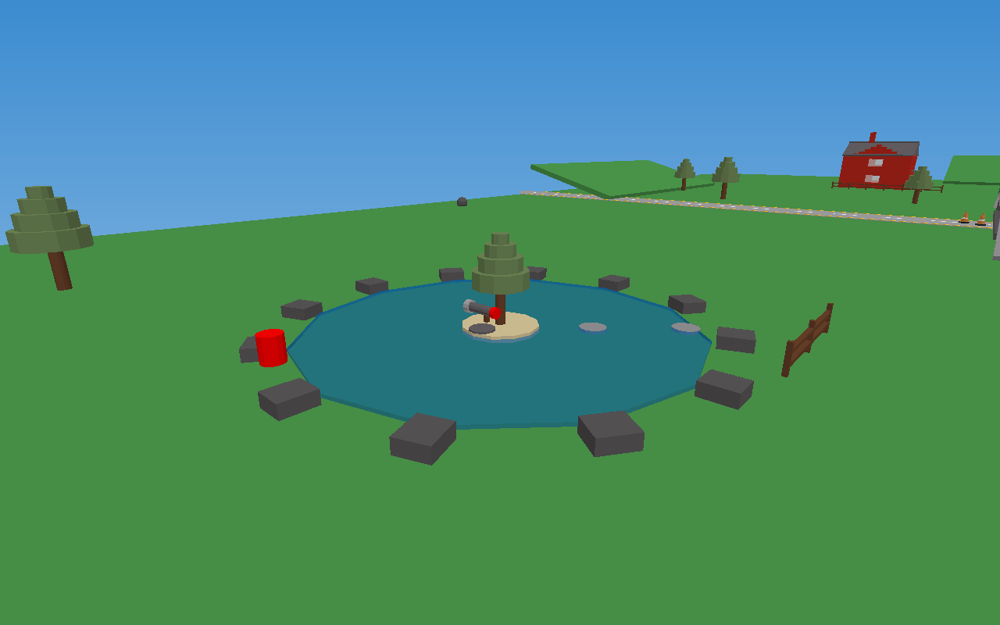
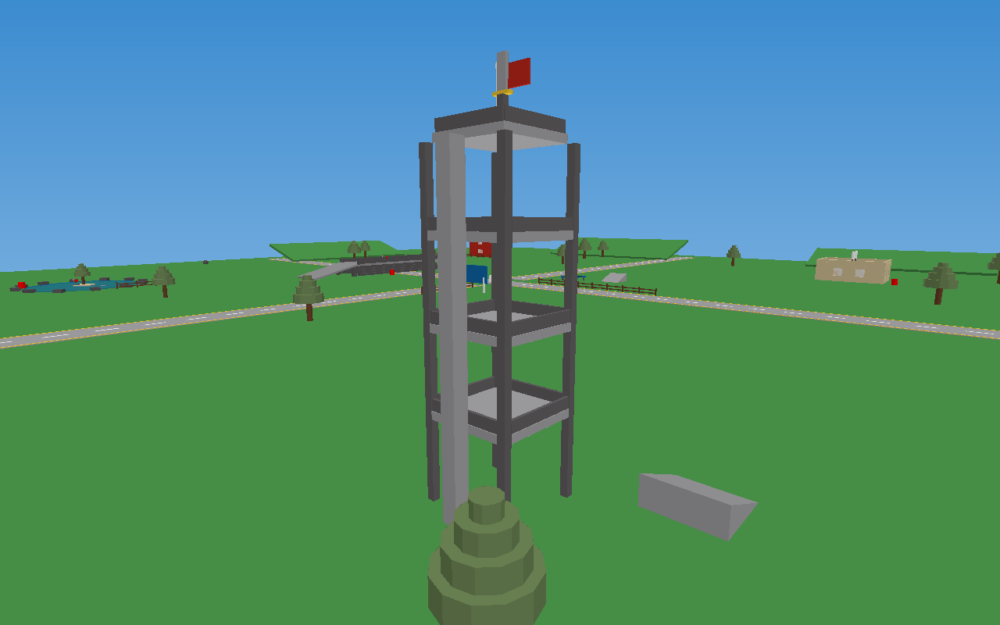
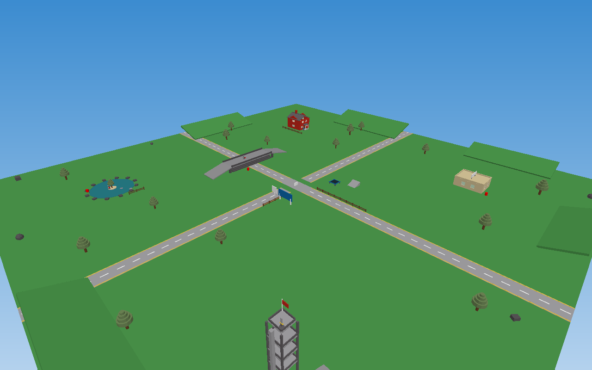
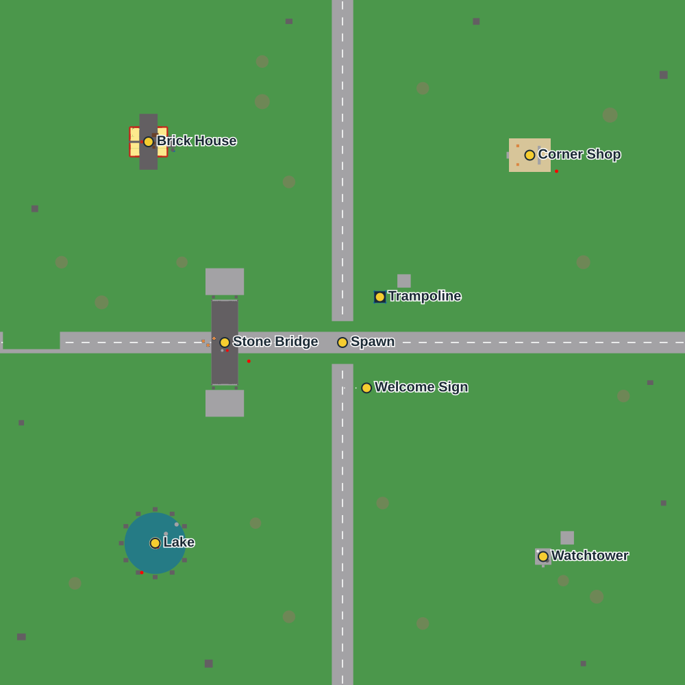

CROSSROADS (2007)
Four roads meet in the middle of nowhere. A stone bridge, a red brick house, a corner shop, a lake, a watchtower — and a sword waiting on top of it. The classic map you remember, rebuilt brick by brick.
Era target: mid-2007
Spawn: crossroads center pad
Respawn: 5 seconds
Tools: Classic Sword ×2,
Rocket Launcher ×2
Leaderboard: KOs / Wipeouts
Hazards: red barrels (!)
Live 3D preview
Screenshots






Map guide

- Spawn pad — dead center of the crossroads, classic white swirl pad.
- Welcome sign — “Welcome to ROBLOX!” billboard with the classic logo.
- Stone bridge — slate-grey corbel arch over the east–west road. Rocket Launcher on the deck.
- Brick house — two stories, glass windows, spiral stairs, porch. Sword on the porch.
- Corner shop — tan building with rooftop sign and crates.
- Lake — classic blue “water” disk, island pine, Rocket Launcher #2.
- Watchtower — climb the truss ladder, grab the flag view and Sword #2.
- Trampoline — 120-stud bounce, right next to spawn.
- Red barrels — hit one and you WILL feel like it's 2007 again.
What's inside
Map & props
- Studded bright-green baseplate, 512×512 studs
- Two grey roads, white dashed center lines, yellow edge lines
- Slate stone bridge with stepped arches + railings
- Two-story red brick house (windows, door, furniture, spiral stairs)
- Tan/beige corner shop with flat roof + sign
- Lake with island, stepping stones & slate rim
- Watchtower with decks, railings, truss ladder, red flag
- Classic pine trees (cylinder trunk + disc leaves)
- Grass hills, slate boulders, wooden fences
- Traffic cones, explosive red barrels, mailbox, trampoline, skate ramps
Period-correct details
- No meshes. No unions. No CSG. Parts, Wedges, Cylinders and Balls only.
- Plastic + Slate materials only — zero PBR
- Legacy lighting technology, global shadows off, 2:00 PM
- Classic
sky512skybox (blue sky, white clouds) - White spawn pad at the crossroads, 5-second respawns
- Classic-style leaderboard: KOs and Wipeouts
- Default chat, default camera, default character — no custom UI
- No ProximityPrompts, no StreamingEnabled, no modern knobs
- Touch-to-pickup tools that respawn on their pads
- Swords lunge, rockets break joints, barrels chain-explode
Download
The whole game is a single place file — no dependencies, no packages:
The place is generated from tools/generate-place.mjs — tweak the map in code and rebuild with node tools/generate-place.mjs.
Play it for real: publish to Roblox
- Download
Crossroads.rbxlx(button above) and open Roblox Studio. - File → Open… and pick the file. The whole map loads — check the Welcome sign, grab the sword on the house porch, blow up a barrel.
- Test it: press Play (F5). You spawn on the white pad at the crossroads. Touch a tool on its grey pad to pick it up.
- File → Publish to Roblox As… → create a new experience and name it
Crossroads. - On the experience page set it Public. Done — share the link like it's September 2007.
Notes: modern Roblox requires FilteringEnabled, so the classic no-filtering behavior is emulated in the tool scripts instead. The spawn-pad and logo decals reference classic re-uploaded images; if one ever moderates out, swap the decal ID in the generator and rebuild.